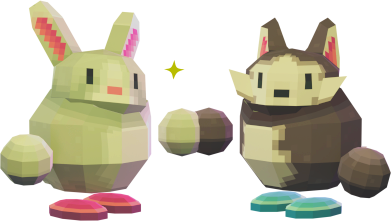

Este listado colaborativo está mantenido por Nokorpo.
Todos los datos son de dominio público.
Aquí se listan colectivos, asociaciones, empresas, organismos públicos, universidades, partidos políticos, y demás grupos que tengan presencia verificada en el fediverso.
✨ = Tiene cuenta en el Fediverso, y ha eliminado o no tiene cuenta de Twitter/X
⭐️ = Tiene cuenta en el Fediverso, y ha abandonado oficialmente su cuenta de Twitter/X
🔒 = Tiene cuenta en el Fediverso, pero sigue usando Twitter/X